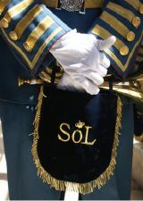

Historia de la Banda del Sol
Orígenes y Fundación

La Banda de Cornetas y Tambores Nuestra Señora del Sol fue fundada en el año 1975 en Sevilla, gracias al impulso de Eusebio Álvarez-Osorio Rojas-Marcos, quien se convirtió en su primer director. La banda surgió en un contexto de gran fervor religioso y cultural, en el que muchos sevillanos deseaban recuperar la tradición de las bandas de cornetas y tambores para acompañar las procesiones de la ciudad, especialmente durante la Semana Santa.
La banda tiene su sede en la iglesia de San Diego de Alcalá, ubicada en el barrio sevillano de El Plantinar, una de las zonas con gran tradición cofrade en la ciudad. Su fundación se produjo dentro de un ambiente de devoción mariana, con el propósito de rendir homenaje a la Virgen del Sol, cuya advocación inspiró el nombre de la banda.
Evolución y Estilo Musical
Desde su creación, la banda ha experimentado una notable evolución tanto en su formación como en su estilo musical. Su repertorio abarca una amplia variedad de marchas procesionales, combinando las piezas más tradicionales con otras másinnovadoras, y adaptando su estilo a las necesidades de las hermandades que la han requerido en diversas ocasiones. Lo que caracteriza a la Banda de Cornetas y Tambores Nuestra Señora del Sol es su capacidad técnica, que les permite interpretar obras de alta complejidad.
A lo largo de los años, la banda ha trabajado para renovar y preservar el repertorio de marchas clásicas de la música cofrade sevillana, además de incorporar algunas composiciones propias, logrando así una identidad musical única dentro del panorama de las bandas sevillanas.
Contribución a la Música Cofrade de Sevilla
La Banda de Cornetas y Tambores Nuestra Señora del Sol ha jugado un papel fundamental en la recuperación y preservación de la tradición musical de la Semana Santa sevillana. En 1986, la banda fue fundamental en la recuperación de la tradición de interpretar las "Lágrimas de San Pedro" desde la Giralda el 29 de junio, una costumbre que se remontaba al siglo XV, pero que se había interrumpido durante años.
La banda también ha sido parte de eventos que han marcado la historia de la música cofrade, como conciertos en diferentes puntos de la ciudad y fuera de ella, representando a Sevilla en otros lugares de la geografía española.
Reconocimientos y Legado
La Banda de Cornetas y Tambores Nuestra Señora del Sol ha recibido a lo largo de su existencia diversos reconocimientos por su labor musical y su contribución a la preservación de las tradiciones sevillanas. Estos galardones no solo han sido en forma de premios, sino también de una admiración unánime por parte de otras formaciones musicales, hermandades y el público sevillano.
A lo largo de las décadas, la banda ha mantenido una gran fidelidad a sus orígenes y principios, lo que le ha permitido superar momentos difíciles y seguir evolucionando sin perder la esencia que la hizo grande en sus primeros años.